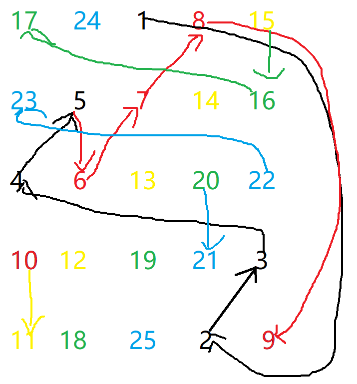

幻方与C++的碰撞（动脑胜过暴力）¶
动机¶
之前在逛洛谷的时候发现了一道关于幻方的题，正愁没有素材，这不就来了嘛
背景¶
幻方¶
照例，去百度百科抄个定义
幻方也是一种中国传统游戏。旧时在官府、学堂多见。它是将从一到若干个数的自然数排成纵横各为若干个数的正方形，使在同一行、同一列和同一对角线上的几个数的和都相等。
注：本篇文章只考虑奇数阶幻方¶
解决（公式暴力法）¶
手工解决¶
对于奇数阶幻方，可以按以下方法解： 首先将 1 写在第一行的中间。
之后，按如下方式从小到大依次填写每个数 K(K=2,3,⋯,N×N) ：
若 (K-1)在第一行但不在最后一列，则将 K填在最后一行， (K-1) 所在列的右一列；
若 (K-1)在最后一列但不在第一行，则将 K填在第一列， (K-1)所在行的上一行；
若 (K-1)在第一行最后一列，则将 K填在 (K-1)的正下方；
若 (K-1)既不在第一行，也不在最后一列，如果 (K-1)的右上方还未填数，则将 K 填在 (K-1) 的右上方，否则将 K 填在 (K-1)的正下方。
C语言¶
以下代码为纯正铁头娃做法，二话不说上来直接模拟公式
//头文件什么的自己写去
int a[1000000][1000000];//数组开多大按数据范围而定
int main()
{
int i,j,n,k;
cin >> n;
memset(a,0,sizeof(a)); //数组初始化
a[1][(n+1)/2]=1; i=1; j=(n+1)/2; //i,j为对应位置
for (k=2; k <= n*n; k++) //循环内模拟公式
{
if ((i==1)&&(j!=n))
{
a[n][j+1]=k;
i=n; j++;
continue; //满足任一条件后开始下一循环
}
if ((j==n)&&(i!=1))
{
a[i-1][1]=k;
i--; j=1;
continue;
}
if ((i==1)&&(j==n))
{
a[i+1][j]=k;
i++;
continue;
}
if ((i!=1)&&(j!=n))
{
if (a[i-1][j+1]==0)
{
a[i-1][j+1]=k;
i--; j++;
}
else
{
a[i+1][j]=k;
i++;
}
}
}
for (i=1; i <= n; i++)
{
for (j=1; j <= n; j++)
cout << a[i][j] << ' ';
cout << endl;
}
return 0;
}
解法2（巧妙找规律）¶
思路¶
这里们先用一个5阶的幻方手工模拟一下
17 24 1 8 15
23 5 7 14 16
4 6 13 20 22
10 12 19 21 3
11 18 25 2 9 从1数到25，发现规律了吗？没有？看下面这张图

根据图中的箭头提示，可以清楚地看到每一个数的位置都向右上45°，在5（也就是n）的倍数时向下走
数组代码表示为a[i+1][j+1]
同样，在触碰到边界后会从最下边或最左边继续开始
有了这些，剩下的就简单了
C语言代码¶
//头文件什么不存在的
int a[10001][10001];
int n;
int sum=1,i,j;
int main()
{
cin>>n;
i=1,j=n/2+1;//因为1是从第一行中间，所以以此为j
while(sum<=n*n){//到n*n就停
a[i][j]=sum;//开始
if(sum%n==0){//n的倍数往下走
++i;
if(i==n+1)//触碰到边界后重新
i=1;
}
else
--i,++j;//往右上走
if(i==0) i=n;
if(j==n+1) j=1;//触碰边界，同上
++sum;
}
for(int i=1;i<=n;i++){
for(int j=1;j<=n;j++)
cout<<a[i][j]<<" ";
cout<<endl;
}//输出
return 0;
}
代码量是不是减少了许多呢，这就是动脑的力量